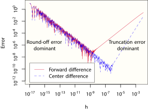
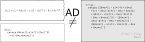
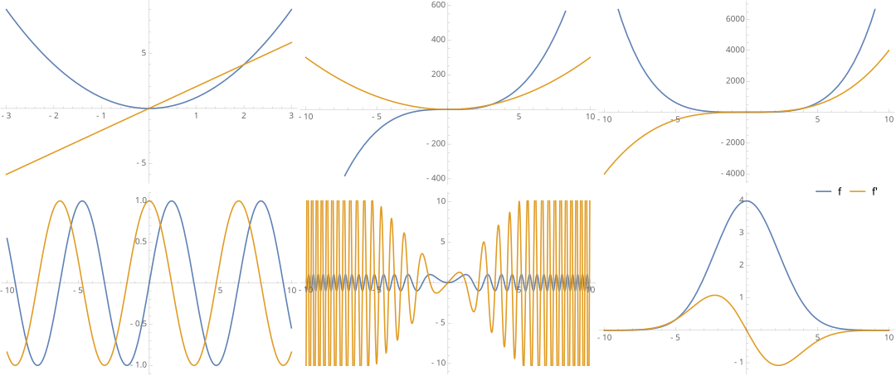
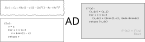
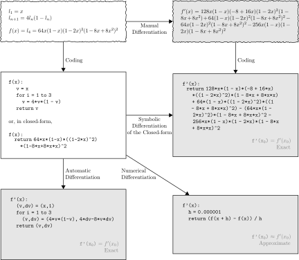
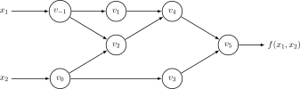
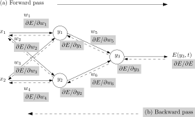
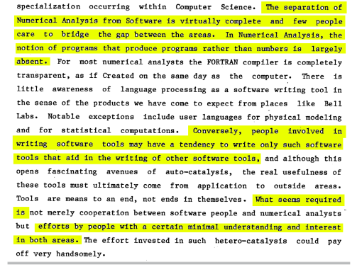
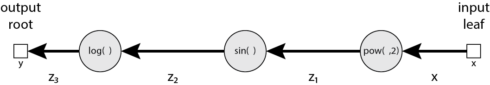

CS8850
Advanced Machine Learning

| # | date | topic | description |
|---|---|---|---|
| 1 | 24-Aug-2026 | Introduction | |
| 2 | 26-Aug-2026 | Foundations of learning | Drop/Add |
| 3 | 31-Aug-2026 | PAC learnability | HW1 |
| 4 | 02-Sep-2026 | Linear learning models | |
| 5 | 07-Sep-2026 | Labor Day Holiday | Holiday |
| 6 | 09-Sep-2026 | Principal Component Analysis | Project ideas |
| 7 | 14-Sep-2026 | Curse of Dimensionality | HW2, HW1 due |
| 8 | 16-Sep-2026 | Bayesian Decision Theory | |
| 9 | 21-Sep-2026 | Parameter estimation: MLE | |
| 10 | 23-Sep-2026 | Parameter estimation: MAP & NB | finalize teams |
| 11 | 28-Sep-2026 | Logistic Regression | HW3, HW2 due |
| 12 | 30-Sep-2026 | Kernel Density Estimation | |
| 13 | 05-Oct-2026 | Support Vector Machines | |
| 14 | 07-Oct-2026 | Matrix Factorization | |
| 15 | 12-Oct-2026 | * Midterm | Exam, HW3 due |
| 16 | 14-Oct-2026 | k-means clustering | |
| 17 | 19-Oct-2026 | Invited: Intro to Causal Learning I |
| # | date | topic | description |
|---|---|---|---|
| 18 | 21-Oct-2026 | Invited: Intro to Causal Learning II | |
| 19 | 26-Oct-2026 | * Mid-point projects checkpoint | HW4, P |
| 20 | 28-Oct-2026 | Expectation Maximization | |
| 21 | 02-Nov-2026 | Stochastic Gradient Descent | |
| 22 | 04-Nov-2026 | Automatic Differentiation | |
| 23 | 09-Nov-2026 | Nonlinear embedding approaches | HW5, HW4 due |
| 24 | 11-Nov-2026 | Model comparison | |
| 25 | 16-Nov-2026 | Model Calibration | |
| 26 | 18-Nov-2026 | Convolutional Neural Networks | |
| 27 | 23-Nov-2026 | Thanksgiving Break | Holiday |
| 28 | 25-Nov-2026 | Thanksgiving Break | Holiday |
| 29 | 30-Nov-2026 | Word Embedding | |
| 30 | 02-Dec-2026 | Project Final Presentations | HW5 due, P |
| 31 | 07-Dec-2026 | Presentation spillover / Exam prep | Classes End |
| 32 | 09-Dec-2026 | * Final Exam | Exam |
| 33 | 16-Dec-2026 | Project Reports | due |
| 34 | 17-Dec-2026 | Grades due 5 p.m. | PAWS |
".. may be one of the best scientific computing techniques you’ve never heard of."
Alexey Radul
The very first computer science PhD dissertation introduced forward accumulation mode automatic differentiation.
Wengert (1964)
Robert Edwin Wengert. A simple automatic derivative evaluation program. Communications of the ACM 7(8):463–4, Aug 1964.
A procedure for automatic evaluation of total/partial derivatives of arbitrary algebraic functions is presented. The technique permits computation of numerical values of derivatives without developing analytical expressions for the derivatives. The key to the method is the decomposition of the given function, by introduction of intermediate variables, into a series of elementary functional steps. A library of elementary function subroutines is provided for the automatic evaluation and differentiation of these new variables. The final step in this process produces the desired function’s derivative. The main feature of this approach is its simplicity. It can be used as a quick-reaction tool where the derivation of analytical derivatives is laborious and also as a debugging tool for programs which contain derivatives.
R. E. Bellman, H. Kagiwada, and R. E. Kalaba (1965) Wengert’s numerical method for partial derivatives, orbit determination and quasilinearization, Communications of the ACM 8(4):231–2, April 1965, doi:10.1145/363831.364886
In a recent article in the Communications of the ACM, R. Wengert suggested a technique for machine evaluation of the partial derivatives of a function given in analytical form. In solving nonlinear boundary-value problems using quasilinearization many partial derivatives must be formed analytically and then evaluated numerically. Wengert’s method appears very attractive from the programming viewpoint and permits the treatment of large systems of differential equations which might not otherwise be undertaken.
Automatic Differentiation (AD) mechanically calculates the derivatives (Leibnitz, 1664; Newton, 1704) of functions expressed as computer programs, at machine precision, and with complexity guarantees.
Numerical differentiation is a problematic approximation:
- thou shalt not add small numbers to big numbers
- thou shalt not subtract numbers which are approximately equal

Taylor expansion of $\frac{f(x+h)-f(x)}{h}$ in finite-precision floating point ($\varepsilon_{\text{mach}} \approx 10^{-16}$):
$\displaystyle \frac{\text{fl}(f(x+h)) - \text{fl}(f(x))}{h} \;=\; f'(x) \;+\; \underbrace{\frac{h}{2}f''(x) + O(h^2)}_{\substack{\text{Truncation Error } O(h)\\ \text{dominates when } h \text{ is large}}} \;+\; \underbrace{\frac{\pm 2\,\varepsilon_{\text{mach}}|f(x)|}{h}}_{\substack{\text{Cancellation Error } O(\varepsilon_{\text{mach}}/h)\\ \text{explodes as } h \to 0}}$

$$\begin{aligned} f(\vec{x}) = \prod_{i=1}^d x_i \implies \nabla f(\vec{x}) &= \left(\frac{\partial f}{\partial x_1}, \frac{\partial f}{\partial x_2}, \dots, \frac{\partial f}{\partial x_d}\right) = \Big(\underbrace{x_2 x_3 \cdots x_d}_{d-1 \text{ mults}}, \;\; \underbrace{x_1 x_3 \cdots x_d}_{d-1 \text{ mults}}, \;\; \dots, \;\; \underbrace{x_1 x_2 \cdots x_{d-1}}_{d-1 \text{ mults}}\Big) \end{aligned}$$




For $f: \RR^n \to \RR^m$, seeding $\dot{\vec{x}} = \vec{e}_j$ computes column $j$ of $\bm{J}_f$ $\implies$ $n$ forward passes for the full Jacobian.
Seeding $\dot{\vec{x}} = \vec{r}$ computes the Jacobian-Vector Product (JVP) $\bm{J}_f \vec{r} = \nabla_{\vec{x}} f(\vec{x}) \cdot \vec{r}$ in a single pass!
$$\begin{aligned} v + \dot{v}\epsilon, &\qquad v, \dot{v} \in \RR, \quad \epsilon \ne 0, \quad \mathbf{\epsilon^2 = 0} \\ (v + \dot{v}\epsilon) + (u + \dot{u}\epsilon) &= (v + u) + (\dot{v} + \dot{u})\epsilon\\ (v + \dot{v}\epsilon)(u + \dot{u}\epsilon) &= (vu) + (v\dot{u} + u\dot{v})\epsilon + \cancel{\dot{v}\dot{u}\epsilon^2}\\ f(v+\dot{v}\epsilon) &= \underbrace{f(v)}_{\text{primal}} + \underbrace{f^{\prime}(v)\dot{v}}_{\text{tangent}}\epsilon \end{aligned}$$

No "errors" propagate backward! We are just evaluating the linearization (gradient) of a function at a point.
In the 1970s, tools for automated generation of adjoint codes (aka reverse accumulation mode automatic differentiation, aka backpropagation) were developed.
Bert Speelpenning

$$y = \log(\sin(x^2))$$

$$\begin{aligned} x &\\ z_1 &= x^2\\ z_2 &= \sin(z_1)\\ z_3 &= \log(z_2)\\ y &= z_3 \end{aligned}$$
How sensitive is the final scalar output $y$ to intermediate variable $z_i$? $\quad \bar{z}_i \;\def\; \frac{\partial y}{\partial z_i}$
$$\begin{aligned} \text{Seed at output: } \quad \bar{y} &= \frac{\partial y}{\partial y} = 1 \\[6pt] \text{Propagate backward: } \quad \bar{z}_i &= \frac{\partial y}{\partial z_i} = \sum_{j \in \text{children}(i)} \underbrace{\bar{z}_j}_{\frac{\partial y}{\partial z_j}} \frac{\partial z_j}{\partial z_i} \end{aligned}$$
$$\begin{aligned} x &\\ z_1 &= x^2\\ z_2 &= \sin(z_1)\\ z_3 &= \log(z_2)\\ y &= z_3 \end{aligned}$$
- $\bar{x} = \left(\left(\frac{\partial y}{\partial z_3}\frac{\partial z_3}{\partial z_2}\right) \frac{\partial z_2}{\partial z_1}\right)\frac{\partial z_1}{\partial x}$
- $\bar{x} = \frac{\partial y}{\partial x} = \frac{\partial y}{\partial z_1}\frac{\partial z_1}{\partial x} = \bar{z}_1 2 x$
- $\bar{z}_1 = \frac{\partial y}{\partial z_1} = \frac{\partial y}{\partial z_2}\frac{\partial z_2}{\partial z_1} = \bar{z}_2\mathrm{cos}(z_1)$
- $\bar{z}_2 = \frac{\partial y}{\partial z_2} = \frac{\partial y}{\partial z_3}\frac{\partial z_3}{\partial z_2} = \bar{y}\frac{1}{z_2}$
- $\bar{z}_3 = \frac{\partial y}{\partial z_3} = \frac{\partial y}{\partial y} = \bar{y} = 1$ (seed)
Every matrix $\bm{Z}_i \in \RR^{r \times c}$ has an adjoint $\bar{\bm{Z}}_i \;\def\; \frac{\partial y}{\partial \bm{Z}_i} \in \RR^{r \times c}$ of the exact same shape! (Silva et al., Appendix III)
$$\begin{aligned} \text{Matrix Product:} \quad \bm{Z} &= \bm{A}\bm{B} &\implies \quad \bar{\bm{A}} &= \bar{\bm{Z}}\bm{B}^T, \qquad \bar{\bm{B}} = \bm{A}^T\bar{\bm{Z}} \\ \text{Hadamard Product:} \quad \bm{Z} &= \bm{A} \odot \bm{B} &\implies \quad \bar{\bm{A}} &= \bar{\bm{Z}} \odot \bm{B}, \qquad \bar{\bm{B}} = \bm{A} \odot \bar{\bm{Z}} \\ \text{Element-wise } \phi: \quad \bm{Z} &= \phi(\bm{A}) &\implies \quad \bar{\bm{A}} &= \bar{\bm{Z}} \odot \phi'(\bm{A}) \quad \left(\text{element-wise } \log(\bm{A}) \implies \bar{\bm{Z}} \oslash \bm{A}\right) \\ \text{Inverse & Log-Det:} \quad \bm{Z} &= \bm{A}^{-1} &\implies \quad \bar{\bm{A}} &= -\bm{A}^{-T}\bar{\bm{Z}}\bm{A}^{-T}; \quad z = \ln|\det\bm{A}| \implies \bar{\bm{A}} = \bar{z}\bm{A}^{-T} \\ \text{Sum & Transpose:} \quad \bm{Z} &= \bm{A} \pm \bm{B} &\implies \quad \bar{\bm{A}} &= \bar{\bm{Z}}, \;\; \bar{\bm{B}} = \pm\bar{\bm{Z}}; \quad \bm{Z} = \bm{A}^T \implies \bar{\bm{A}} = \bar{\bm{Z}}^T \end{aligned}$$